+ Реконструкция (эпизоды 1, 3–7) LCRecon Субтитры: Русские и Английские | 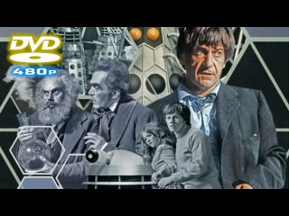 |
|---|---|
+ Реконструкция (эпизоды 1, 3–7) 2021 Субтитры: Русские и Английские | 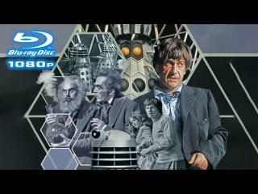 |
+ Черно-белая анимация в соотношении сторон 4:3 (эпизоды 1, 3–7) Субтитры: Русские и Английские | 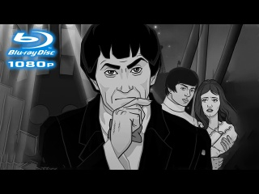 |
Субтитры: Русские и Английские | 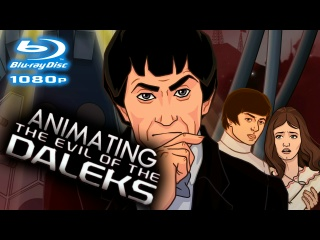 |
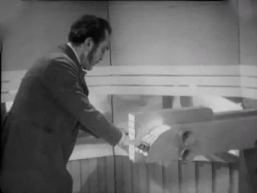 эп.1 - Nigel Anderton | 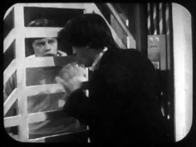 эп.7 - Garrett Gilchrist, Adam Bullock, Ian Levine, Loose Cannon, Unknown |
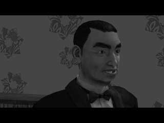 эп.1 - Who Recons | 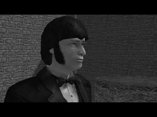 эп.3 - Who Recons |
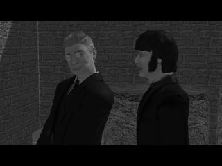 эп.4 - Who Recons | 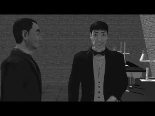 эп.5 - Who Recons |
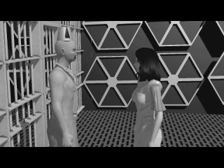 эп.6 - Who Recons | 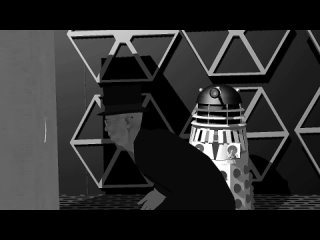 эп.7 - Who Recons |
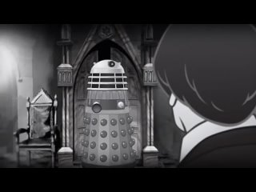 эп.5 - Отрывок- Завершение эксперимента (Chris Chatterton) | 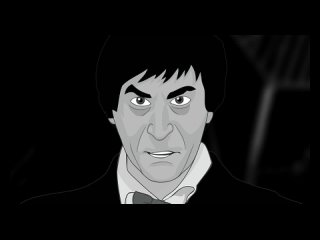 эп.6 - Отрывок- Финальная сцена (Conga Line Monkey) |
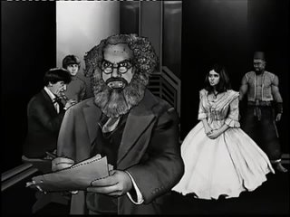 эп.7 - Отрывок- Различные сцены (Adam Bullock, Ian Levine, Garrett Gilchrist) | 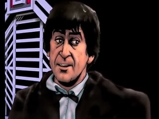 эп.7 - Отрывок- Различные сцены (Garrett Gilchrist) |
| Изначально все эпизоды утеряны * 2-й эпизод найден в 1987 г. - 16mm t/r * На утерянные 1, 3-7 эпизоды имеется реконструкция * Имеется ч/б и цветная анимация на все эпизоды |
|---|
| |
«Зло далеков» — холодная, почти философская схватка, где далеки пытаются вычленить и присвоить саму суть человечности: Доктор оказывается втянут в их эксперимент, балансируя между спасением спутников и попыткой обратить замысел врага против него самого, а викторианский антураж и зеркальные ловушки лишь подчёркивают, как легко грань между творцом и монстром стирается в погоне за абсолютной логикой. Тон истории — напряжённый и мрачно-рассудочный, будто каждый шаг отдаёт эхом не просто по коридорам, а по самой природе того, что делает нас людьми.
 VHS - 1992 |  DVD (2эп.) - 1 ноября 2004 |
|---|---|
 LC (recon) - январь 2009 |  Blu-ray (Анимация) - 27 сентября 2021 * Версия в нашей группе |


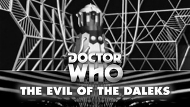